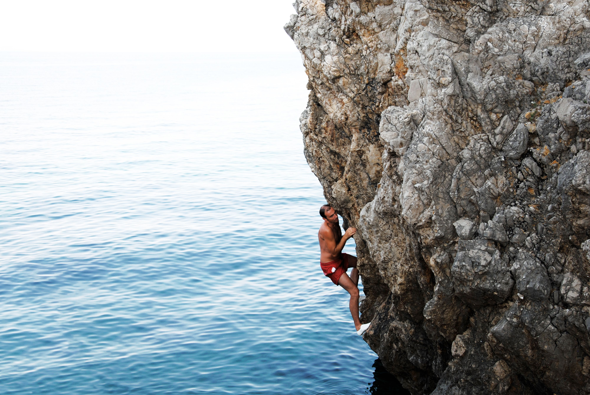

Psicobloc: Climbing above water
Climbing above water is the most freeing and fun way to climb!
Learn MoreFreedom of Movement
DWS is the only way to safely climb long routes without a cumbersome rope.
Push Your Limits
DWS will help you find your limits and conquer your fear of heights.
Fun For Everyone
You can bring a boat for DWS and host your family and friends for a beautiful boating day with an awesome activity.
Chris Sharma's First Ascent of Es Pontás
Chris Sharma is a pioneer of deep water soloing. With this video of his ascent of “Es Pontas” in Mallorca, he brought DWS to the climbing community. By showcasing the beautiful rock and environment of the climb, Chris was able to bring DWS to a new generation of climbers.
Mallorca
Mallorca is the premiere destination for DWS in the world. Most of the famous routes for DWS are there, because of the overhung cliffs and beautiful mediterranean climate.
Equipment Needed
The only equipment needed are a pair of climbing shoes and a towel!